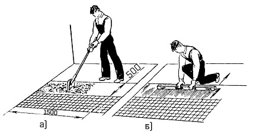

-

8(0152)31-25-61
-

kst@ggkst.by
-

http://ggkst.by
8(0152)31-25-61
kst@ggkst.by
http://ggkst.by
Карта 6: Настилка полов поштучной укладкой плиток
Состав технологический операций. Очистка и увлажнение основания; разбивка покрытия на захватки и установка промежуточных маяков;
укладка растворной прослойки и плиток.
Инструменты, приспособления, инвентарь. Тележка со сменными контейнерами; растворосмеситель; пылесос. Лопатка для плиточных работ;
растворная лопата; кисть-макловица; деревянный полутерок; стальные штыри с причальным шнуром; молоток-кулачок для забивки штырей; рейка-правило
длиной до 1,5 м для разравнивания растворной прослойки по маякам; деревянная киянка или хлопуша для осаживания уложенных плиток; металлические грабли;
стальной скребок или проволочная щетка для очистки отдельных мест основания; рейка Болотина; двухметровая рейка с уровнем; металлическая рулетка и метр;
рычажный плиткорез; угольник; контрольно-ступенчатая линейка для измерения выступов или впадин. Контейнер для переноски и хранения плитки;
ведра с водой для увлажнения плиток. Подножка для работы плиточника на свежеуложенной растворной прослойке; скамеечка для работы плиточника;
влагонепроницаемые наколенники.
Рис. 1. Схема организации рабочего места при поштучной укладке плиток: 1 - маячные плитки, 2 - рабочее место плиточника, 3 - маячная рейка, 4, 5 - контейнеры с растворами с плитками, 6 - пылесос, 7 - границы захваток, 8 - растворосмеситель
Материалы. Керамические плитки для полов
(ГОСТ 6787-80). Цементно-песчаный раствор
марки 150, подвижностью 3,5...6 см. Расход раствора для устройства 1 м2 прослойки толщиной 7…15 мм - 0,02 м3.
Схема организации рабочего места (рис. 1). Плитку укладывают способом «на себя», двигаясь по направлению к выходу из помещения.
Поэтому направление захваток, как правило, должно совпадать с направлением света из оконных проемов.
Технологическая последовательность работ. Очистка и увлажнение основания. Строительный мусор, грязь, пыль удаляют вакуумно-щеточной машиной,
пылесосом. После этого основание смачивают водой, не допуская луж или сухих мест.
Разбивка поверхности на захватки. Рейкой Болотина размечают ширину полос-захваток. От стены или ряда ранее уложенных плиток 1 (рис. 2) откладывают расстояние,
равное пяти рядам плиток 1, и устанавливают маячные рейки 2 с помощью правила 3 и уровня на растворные марки 4. Верх рейки должен соответствовать уровню
растворной прослойки.
Укладка растворной прослойки. Доставленный в контейнерах раствор растворной лопатой укладывают на длину 1…1,5 м по всей ширине захватки (рис. 3, а).
Затем раствор разравнивают правилом (рис. 3, б), снимая излишки, и припорашивают выровненную поверхность сухим цементом, после чего слой заглаживают
плиточной лопаткой до появления на поверхности цементного молока. Излишки цементного молока удаляют кистью-макловицей.
Подготовленная прослойка должна быть на 1...2 мм выше уложенного ранее ряда плиток.
Рис. 2. Захватка: 1 - уложенные плитки, 2 - маячная рейка, 3 - правило с уровнем, 4 - растворные марки
Рис. 3. Укладка (а) и выравнивание (б) растворной прослойки
Рис. 4. Поштучная укладка плиток: а - раскладка плиток стопками, б - укладка и осаживание плиток, в - настилка пола с применением скамеечки плиточника
Рис. 5. Выравнивание горизонтальности (а) и прямолинейности шва (б) свежеуложенного покрытия
Укладка плиток. Плитки предварительно раскладывают стопками по 10 шт. по длине захватки (рис. 4, а). Стопки должны находиться одна от другой на
расстоянии двух плиток. На раствор плитку укладывают по ширине захватки (по 5 шт. в ряду) справа налево, а затем слева направо. Предварительно
тыльную сторону плиток протирают мокрой ветошью и левой рукой кладут на подстилающий слой. Легкими ударами молотка или ручкой лопатки осаживают на
раствор до нужного уровня (рис. 4, б). При этом следят, чтобы ширина шва между плитками не превышала 3 мм. Исправляют ширину или общее направление
шва краем лопатки не позднее 15...30 мин после укладки раствора. При работе на растворной прослойке пользуются скамеечкой плиточника (рис. 4, в).
Уложив 5 или 6 поперечных рядов, на плитки кладут брусок и ударами хлопуши, молотка или киянки (рис. 5, а) выравнивают горизонтальность покрытия.
Направление шва выравнивают рейкой, прикладываемой к кромке уложенного ряда плиток (рис. 5, б).
Контроль качества. Контроль осуществляют по ходу работы.
Ширина швов между плитками покрытия должна быть одинаковой и не более 3 мм. Не допускаются просветы более 4 мм между поверхностью пола и наложенной
двухметровой контрольной рейкой, уступы между смежными плитками более 1 мм. Цвет и рисунок покрытия должны соответствовать проектным.
Трудовые затраты (табл. 1).
Таблица 1.
Нормы времени, чел-ч, на 1 м2 покрытия пола (в числителе) и нормы выработки, м , на 1 чел-дн (в знаменателе) при поштучной укладке плиток
| Площадь покрытия, м2 | Размеры плиток, мм | ||
| 100×100 | 150×150 | 200×200 | |
| До 2 | 1,2/6,6 | 0,78/10,25 | 0,67/11,94 |
| До 10 | 1/8,0 | 0,68/11,7 | 0,59/13,5 |
| Свыше 10 | 0,95/8,4 | 0,64/12,5 | 0,56/14,3 |
Техника безопасности. Обеспыливание основания выполняют в защитных очках. При укладке плиток пользуются водонепроницаемыми наколенниками и
резиновыми напальчниками.
Контрольные вопросы. Почему растворная прослойка должна быть выше уровня ранее уложенных плиток?
Как укладывают плитки между маяками? Какие инструменты и приспособления необходимы при укладке растворной прослойки; плиток?
Чем размечают захватки при настилке плиточных полов? В чем заключается пооперационный контроль качества укладки керамических плиток?
Как контролируют качество покрытия?
Карта 7 — Настилка полов пакетным способом